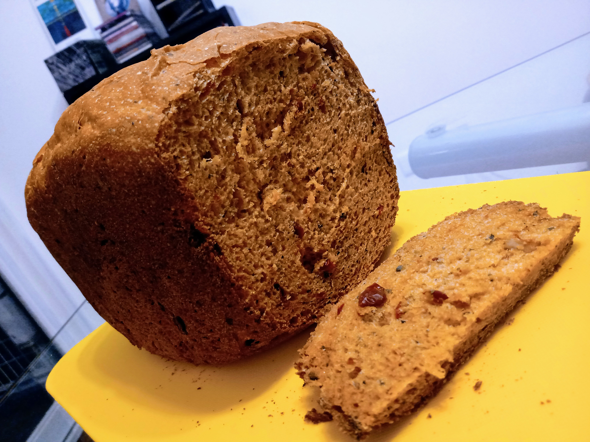

Pan de tomate

Descripción
Esta es mi receta de pan de tomate, "the easy way": en máquina de pan!
Ingredientes
- Tomates secos, 200 gr
- Aceite de oliva, 2 cucharadas
- Harina 000 (3 ceros), 3 cups
- Orégano y albahaca a gusto
- Azúcar, 1 cucharada
- Sal, 1 cucharadita
- Levadura seca, 1 cucharadita
Pasos
- Hidratar los tomates secos
- Cuando ya estén blandos, reservar el agua y picar los tomates
- Incorporar el agua en la cubeta (usar el agua del tomate y completar 250 cc)
- Poner las 2 cucharadas de aceite de oliva
- Incorporar las 3 cups de harina (000)
- Poner el orégano y albahaca a gusto
- Incorporar 1 cucharada de azúcar y 1 cucharadita de sal
- Poner 1 cucharadita de levadura
- Iniciar el programa de pan francés
- Al finalizar el programa, sacar la cubeta y dejar enfriar por 10 minutos
- Desmoldar el pan y dejar enfriar por al menos 1 hora
- Enjoy! 🍞😋